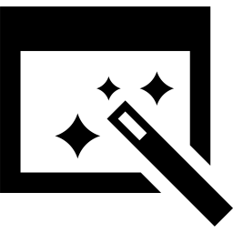

The Events
This is a day-long immersion event that will take place on September 13, 2014 at City College of San Francisco's Ocean campus. The curriculum is designed by OpenHatch, a non-profit dedicated to helping people get involved in open source.

In the morning, we'll teach you about open source licensing, collaboration tools, how free software projects are organized.

In the afternoon, we'll help you make contributions to open source projects.

And throughout the day staff will feed you, get to know you, and talk with you about opportunities for students in open source.